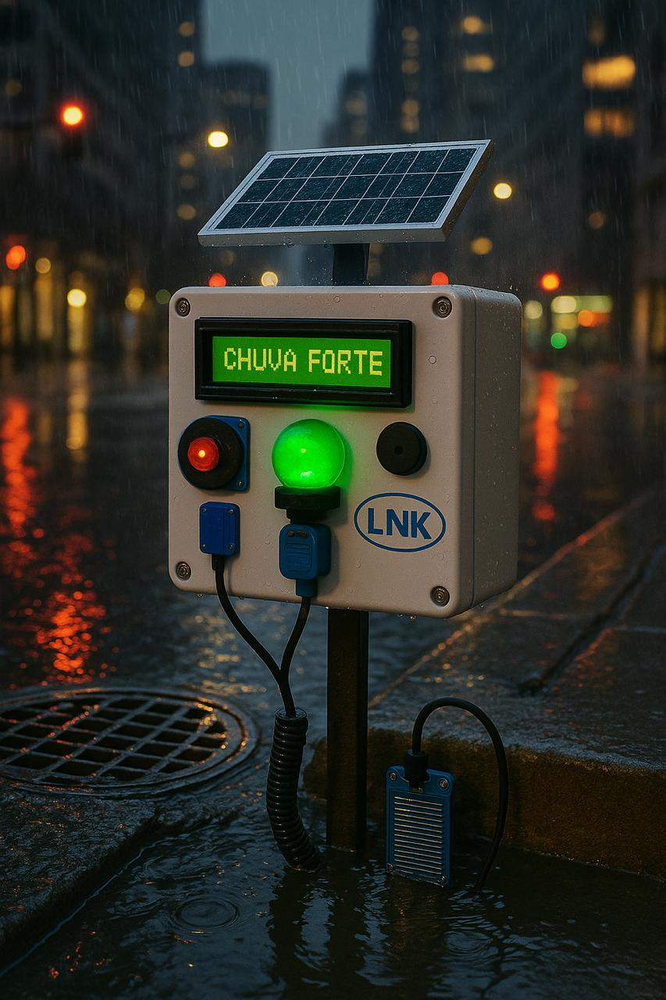
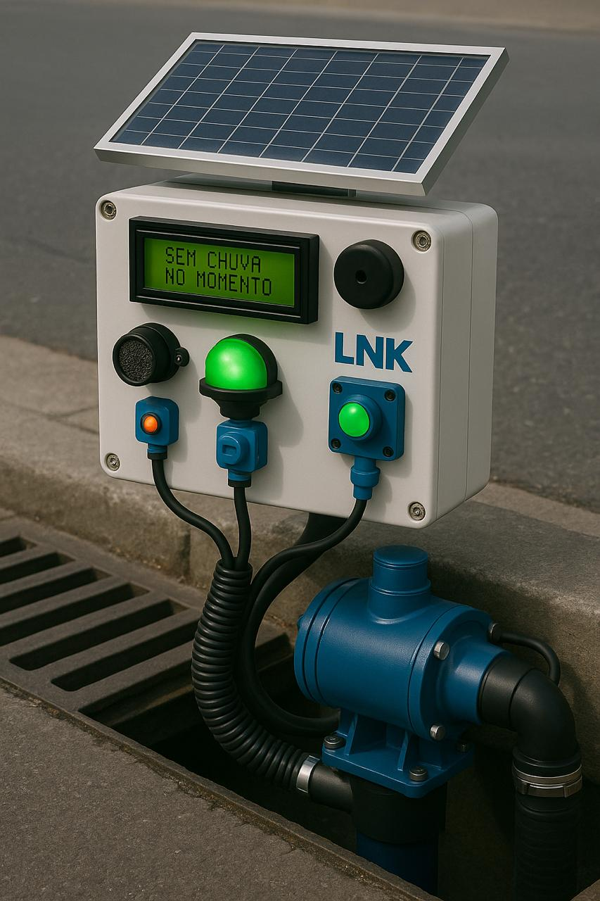
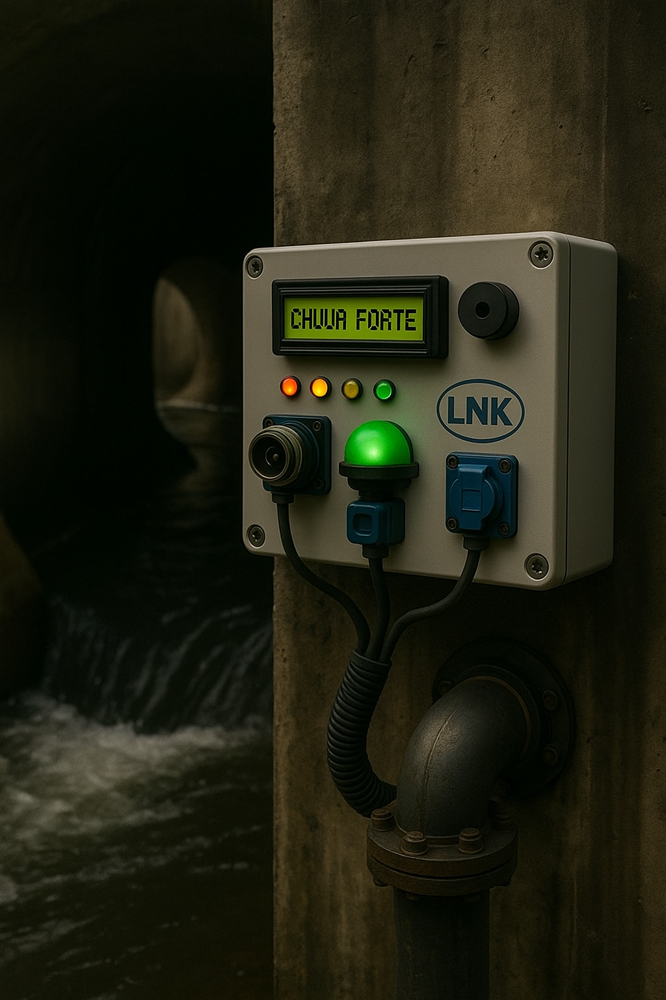
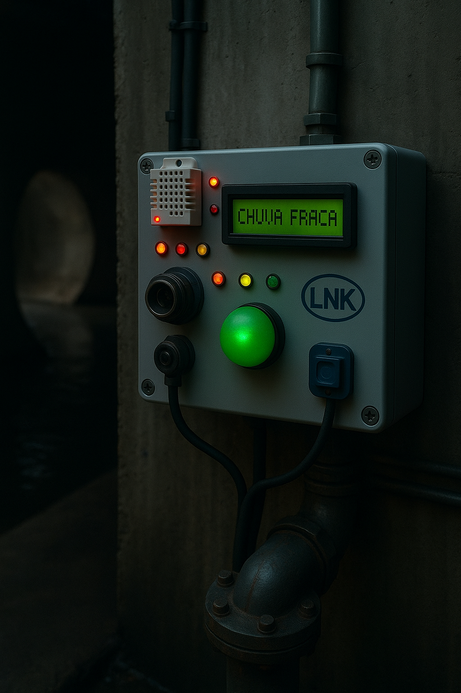

Infraestrutura Tecnológica Aplicada
Foi desenvolvido um protótipo utilizando a plataforma Arduino, com os seguintes componentes:
- Arduino
- Display LCD
- Sensor DHT22
- LEDs
- Sensor Ultrassônico
- Resistores
- Sensor de Chuva
- Sensor de Fluxo de Água
Intuito da aplicaçao
Onde sera aplicado?
Este projeto será aplicado em bueiros e barragens, locais com maior risco de enchentes ou rompimentos, que exigem monitoramento constante. O sistema desenvolvido permite acompanhar diversas variáveis ambientais, como:
- Possibilidade e intensidade de chuvas;
- Nível e fluxo de água;
- Risco de alagamentos ou transbordamentos.
Todas essas informações são coletadas e transmitidas de forma remota, possibilitando uma resposta rápida e eficiente em situações críticas. Com isso, o sistema contribui significativamente para a prevenção de acidentes, minimizando danos e garantindo maior segurança para as áreas monitoradas.



